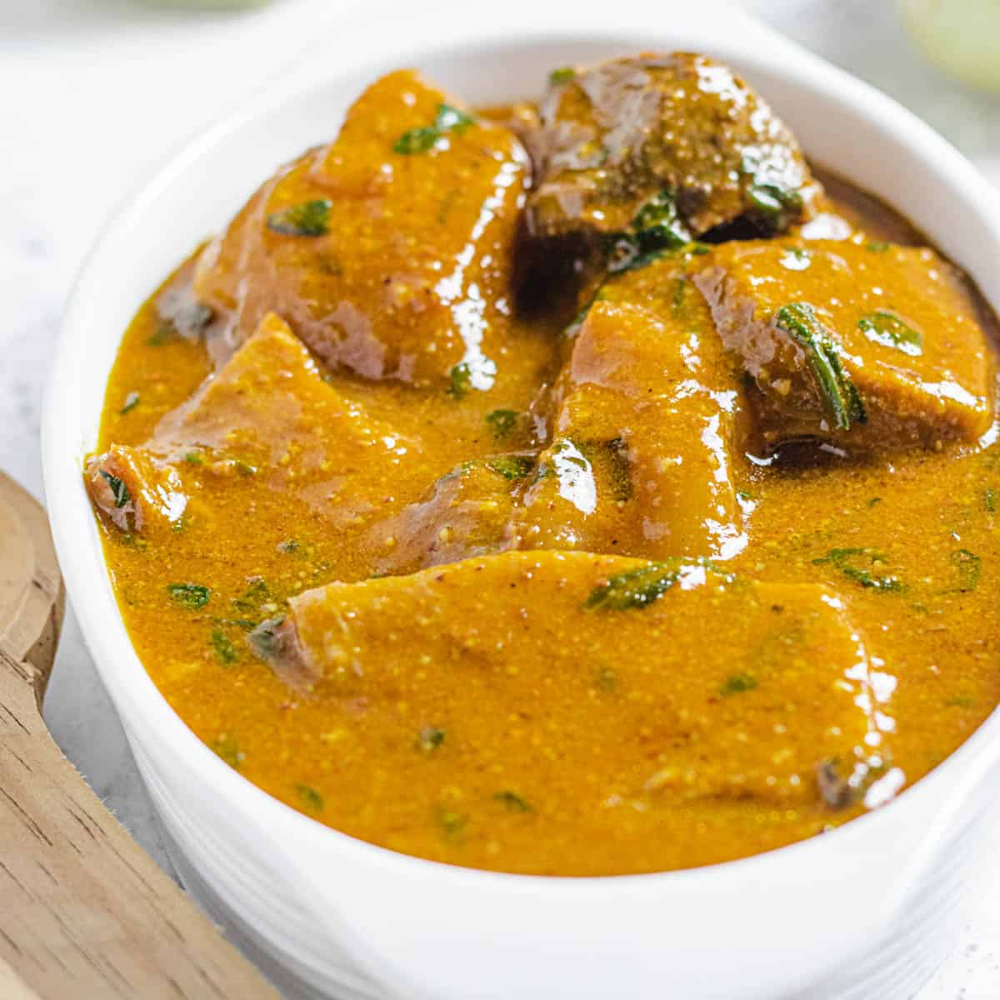

The Great Ogbono Soup

The Ogbono Soup is one you can hardly go wrong when you choose
Is it just me but I feel like ogbono soup has a bad rep in the streets. If you have never tasted ogbono before and you see its slimy goodness for the first time you might think ” Eww” but I assure you that you are wrong. You see this soup is not any regular regular kind of soup.
if it is made correctly, there is so much to love about it
Here is a list of ingredients
- 1 cup ground ogbono
- lb roasted meat and shaki
- 1 cup palm oil
- 3 cups beef stock
- 1 dry fish
- 3 scotch bonnet
How is how Ogbono is made
- In an empty pot on low heat mix palm oil and ogbono to form a smooth paste
- Add stock, let it simmer and boil till it begins to bubble and draw
- Add meat, Pomo, and dry fish then season with spices. Let it all boil for 15 minutes
- Garnish soup with chopped spinach and let it simmer for 2 minutes